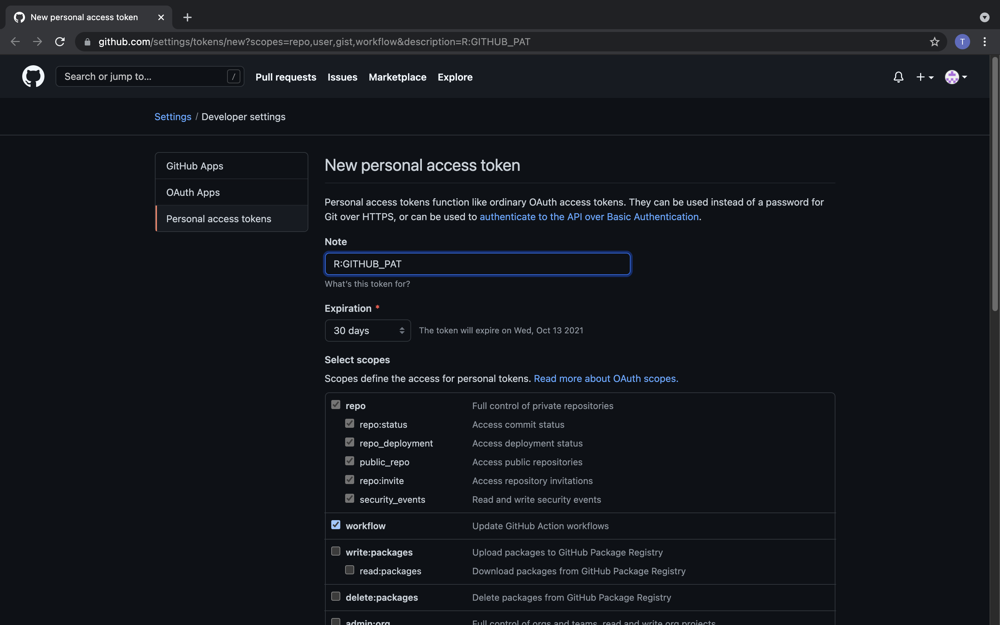

Version Control
Getting used to Git(hub) with R
Welcome back! 💪
This week we will be looking at a key component of the data science workflow: version control. More specifically we will create your first repo on Github and see how we can use it to keep a record of all the changes that were ever made to your code. This is an essential component of collaborative coding efforts, but can also be immensely beneficial to your own solo projects.
Today’s session will follow the exact recipe suggested in Simon’s lecture:
- Create a new repo on Github and initialize it
- Clone this repo to your local machine
- Make some changes to a file (we’ll review some code from last week)
- Stage these local changes
- Commit them to our Git history with a helpful message
- Pull from the GitHub repo just in case anyone else made changes too (not expected here, but good practice).
- Pushed our changes to the GitHub repo.
Before we get into the nitty-gritty of this week’s session, I would like to suggest you all download Github Desktop. It is a GUI that lets you interact with GitHub and might be an additional option if your do not want to rely on RStudio or the Command Line alone. Instructions to set it up and get it running can be found here.
There are a number of different GUIs that you can try out and play around with. Some are better than others. An additional free GUI like GitHub Desktop that I like is GitKraken.
Project Management 🧙
Before getting to know Git(Hub) it is useful to have a look at R-projects and how you should structure them. Version Control is only useful if your projects can be understood by a wide range of collaborators.
First of all, you should always use RStudio projects. They allow you to keep all the files associated with a project together — input data, R scripts, analytical results, figures etc. When you open a Project you will find a .Rproj file. This file contains all the meta information relevant to your project: settings, working directory, open scripts, encoding etc. If you are curious what exactly lies within it, I suggest you open the .Rproj file with a text editor.
However, projects are only as useful as the organization within them. As we saw in the lecture a structure like the following one would be a good starting point.
.
+-- src
+-- output
| +-- figures
| +-- tables
+--data
| +-- raw
| +-- processed
|
+-- README.md
+-- run_analyses.R
+-- .gitignore
The overview can be adapted to requirements inherent to any given project. It might be interesting to spend a little more time looking into the different folders and what they should contains.
Data Folder
The data folder is, as the name suggests, where your data goes. The “raw” folder should contain the original data that will need to be wrangled and manipulated. It might be that your data is stored in an online relational database, or needs to be accessed through an API. In such cases the raw folder can be dispensed with.
Once you have shaped your data into a format that suits your analysis, the data should be stored in the “processed” folder. If you need to perform certain intermediate steps it might also be an idea to create a dedicated “temp” folder.
src folder
This is the folder that should contain your code. You should aim to emulate the workflow of standard data science project within this folder. It is best to separate different aspects of your project into separate scripts. The names of these scripts should be named so as to make it clear what step of the project they represent (i.e. “2-preprocess-data”, “3-descriptives” etc.). These scripts should sequentially be executed through a main runner script. This can be done calling the source() function.
relative paths
Within a given script you should always use relative paths. To access your processed data folder you can use the following file path "./data/processed.RDa". The “.” represents your current working directory, which is set automatically when you open a new R-project.
For more in depth guides and explanations you can look here. If you feel like you want to practice this you can find more material here.
Setting Up Git 🔨
Most of you will already have completed this step (we hope). For future reference however, we included a small reminder on the necessary steps:
Register for a GitHub account.
Install Git (or update version) using the Command Line.
which git
git --version## /usr/bin/git
## git version 2.30.1 (Apple Git-130)brew install git
brew install gh- Enter Credentials for Git
git config --global user.name 'its-me'
git config --global user.email 'my-email@adress.eu'Suggested Workflow 🏄
The following section highlights the recommended workflow that you should employ when you work with Git. You can see it as a sort of recipe that you should follow under most circumstances. At each stage you can find the instructions for working through both the Command Line and through RStudio. Be aware however that these are separate processes that should not be mixed. Either you use the shell for version control or you use RStudio.
1. Create a new repo on Github
Go to your github page and make sure you are logged in.
Click green “New repository” button. Or, if you are on your own profile page, click on “Repositories”, then click the green “New” button.
How to fill this in:
- Repository name: my_first_repo (or whatever you want).
- Description: “figuring out how this works” (or whatever, but some text is good for the README).
- Select Public.
- YES Initialize this repository with a README.
- For everything else, just accept the default.
Great, now that you created a new repo on Github, it is important to note that you should always create a repo prior to starting your work in RStudio.
Question:
There is a distinct advantage to employing the GitHub first, RStudio/Shell second approach, do you know which one?
2. Clone it to your local machine
Whatever way you plan on cloning this repo, you first need to copy the URL identifying it. Luckily there is another green button “Code” that allows you to do just that. Copy the HTTPS link for now. It will look something like this https://github.com/tom-arend/my_first_repo.git.
Using the Command Line
Open the Terminal on your laptop.
Be sure to check what directory you’re in. $ pwd displays the working directory. $ cd is the command to change directory.
Clone a repo into your chosen directory.
cd ~/phd_hertie/teaching/IDS_fall_21
git clone https://github.com/tom-arend/my_first_repo.gitCheck whether it worked:
cd ~/phd_hertie/teaching/IDS_fall_21/my_first_repo
git log
git statusUsing Rstudio
In RStudio, go to:
File > New Project > Version Control > Git.
In the “repository URL”-box paste the URL of your new GitHub repository.
Do not just create some random directory for the local copy. Instead think about how you organize your files and folders and make it coherent.
I always suggest that with any new R-project you “Open in new session”.
Finally, click the “Create Project” to create a new directory. What you get are three things in one:
- a directory or “folder” on your computer
- a Git repository, linked to a remote GitHub repository
- an RStudio Project
In the absence of other constraints, I suggest that all of your R projects have exactly this set-up.
Using Github Desktop
Here is a short gif on how to clone a repo with GitHub Desktop:

3. Make changes to a file
To showcase how useful Git can be, we first need to add some files to our repo. For now there should only be the .gitignore, the .Rproj and the README file. While we do this we might as well review some of the stuff we encountered last week.
So let’s create a new R script and save it in the directory that we just cloned.
First load/install necessary packages (the tidyverse suffices here)
# Set-up your script ------------------------------------------------------
# install.packages(c("tidyverse", "gapminder", "pacman")) # uncomment if already installed
pacman::p_load(tidyverse, gapminder)- Then load the data you want to work with into R.
# Load your Data into R ---------------------------------------------------
data(gapminder)
head(gapminder)- Finally, start cleaning your data.
# Clean your Data ---------------------------------------------------------
gapminder_clean <- gapminder %>%
rename(life_exp = lifeExp, gdp_per_cap = gdpPercap) %>%
mutate(gdp = pop * gdp_per_cap)- For good measure let’s also update our Readme.
4. Stage your Changes and Commit
Before we get on to the next step, it is a goo idea to save this newly created script and give it a name. Do the same thing for the README file. Now that your changes are saved locally we need to let Git know.
Using the Command Line
Stage (“add”) a file or group of files. This allows you to stage specific individual files such as the README file for example.
git add NAME-OF-FILE-OR-FOLDERAlternatively you could stage all files (whether updated or not):
git add -AOr you could stage updated files only (modified or deleted, but not new):
git add -uFinally you can also only stage new files (not updated ones).
git add .Having done so, you are now ready to commit these changes!
git commit -m "Helpful message"As you can imagine, the command shell with its different options (and there are more beyond the staging phase), can be quicker and more flexible than your GUI interface, especially for experienced users.
Using RStudio
In the Environment/History panel a new tab called “git” should have appeared.
- Click on it and it should display all the changed and new files in your directory.
- Now you can select which files you want to stage. Simply tick the box next to your chosen files.
- Hit the Commit Button and a new window should open up.
- In this window you can quickly add a helpful message to mark exactly what you did. (Do not neglect this, as it helps both you and your collaborators to understand your changes.)
This method has the clear advantage of being extremely intuitive. However you are limited to selecting and stageing individual files.
Using GitHub Desktop
Changed or added files are automatically staged in Github Desktop. The GUI also displays (wehere possible) the changes that were done.
You only really need to commit the changes with a nice little summary or message.

5. Pulling and Pushing your commits
This part of the version control workflow should be relatively easy. The most important thing to remember is that you should always pull before you push. The reason for this is that in collaborative projects someone else might have pushed changes to the same file you were working on. This can lead to conflicts that should be avoided.
Using the Command Line
There are only two commands you need to remember here and they are pretty intuitive:
To pull from the main repo:
git pullAnd to push your commits:
git pushUsing RStudio
In RStudio you should see a change in the git tab. It should now read: “Your branch is ahead of ‘origin/main’ by 1 commit”
As long as this information is displayed, you know that you need to pull and push your commit.
To do this simply click on the blue arrow pointing down to pull from your main repo, before clicking on the green arrow pointing upwards to push your commits.
Using Github Desktop
It is not really straightforward to pull before pushing with Github Desktop. Given that there is no prominent pull button, you need to actively remember to do so prior to pressing the blue push button.

At some point during either of these processes you will be prompted to enter your Github credentials and password. It might be that this works or it might be that you receiver the following error message:
remote: Support for password authentication was removed on August 13, 2021. Please use a personal access token instead.
Attention!
Github no longer supports simply using user-name and password as a way of authenticating yourself. You now have to identify yourself using Personal Access Tokens. You can cache these with HTTPS or you can use SSH keys.
Exercises (Part I)
The best way to get into the habit of using Git in your workflow is to practice! So let us get back to our working example with my_first_repo and the initial_script.
- Go to Github and create a new repo called: exercises_1
- Make sure to include a description for the README
- Clone that repo to your local machine using your preferred method
- Change the README file to read: “Hello Github!”
- Save the README.
- Stage and Commit your changes (Do not forget the message along your commit!)
- First Pull from origin (Not necessary here, but it is good to develop the right habits)
- Then push your commit.
Branches 🌴
A really cool feature of version control with Git are Branches.
Branches allow you to take a snapshot of your existing repo and try out a whole new idea without affecting your main (i.e. “master”) branch.
Only once you (and your collaborators) are 100% satisfied, would you merge it back into the master branch.
Okey, time to play around with branches a little bit!
Using the Command Line
Create a new branch on your local machine and switch to it:
git checkout -b NAME-OF-YOUR-NEW-BRANCHPush the new branch to GitHub:
git push origin NAME-OF-YOUR-NEW-BRANCHList all branches on your local machine:
git branchSwitch back to (e.g.) the master branch:
$ git checkout masterDelete a branch
$ git branch -d NAME-OF-YOUR-FAILED-BRANCH
$ git push origin :NAME-OF-YOUR-FAILED-BRANCHUsing RStudio
Creating a new branch within RStudio is very easy.
- Under the git tab in the environment pane you click on the pink L-shaped symbol on the right.
- This will launch a new branch that you can name.
- Switching branches can be accomplished through the drop-down menu next to it.
Using Github Desktop
Given the point-&-click nature of Github Desktop, it is very easy to open a new branch. Here is how it is done:

Pull Requests 🙏
Once you are satisfied that the feature, analysis or whatever it was that you did in your branch, has been completed, you need to notify and ask your collaborators (or yourself) to approve the changes. This is done through Pull Requests.
Pull Requests are best managed directly on Github. As a reminder on how you open pull requests, here is the GIF from the lecture again:

Dealing with Merge Conflicts 🤯
Merge conflicts occur when Git cannot resolve differences in the code between two commits. It only affects commits that apply changes to the same line of code. These merge conflicts are part of Git and alert you to the fact that there is a problem that needs to be addressed before continuing. Helpfully, Git marks where the merge conflict occurred within your code, contrasting the conflicting contributions. Unfortunately, it might be more difficult to resolve in larger projects where the problem is not immediately obvious to the human coder. A better approach would be to make extensive use of branches.
Exercises (Part II) 🏋
For these exercises we will use the same repo created in the first part of the exercises, so be sure to finish them before moving on to this section!
- From the exercises_1 repo open up a new branch called “data-manipulation-idea”.
- Switch to this branch and create a new script.
- Copy the three code chunks from this section into the newly created script.
- Next, and using the tidyverse, subset our cleaned df to include only countries in the Americas.
- Finally, also add a new categorical variable using
mutate()that qualifies whether a country is rich or poor! (Hint use the variable gdp_per_cap andìf_else()) - Save the script!
- Stage your changes and commit them. (Make sure you are commiting them within our “data-manipulation-idea” branch.)
- Go to your repo online and open a pull request.
- Review and merge this pull request.
- Delet the now obsolete branch.
Appendix
Caching credentials with HTTPS
Github recommends that you generate a Personal Access Token and cache it using HTTPS. Luckily for us this can be achieved in a few simple steps.
Using the Command Line
You need to go to your Github Account. Then select your logo in the top right > Settings > Developer Settings > Personal Access tokens
There you can create a new PAT. It is suggested that you select the following categories under scope: repo, workflow, gist, admin::org and user.
Finally click the green button “Generate Token”. Make sure to save a copy of this Token somewhere secure. Once you leave the site you will lose the token!
Finally enter the following command:
gh auth loginIn order select: GitHub.com > HTTPS > Yes > Paste an authentication token
Then you simply need to paste your PAT and you should no longer be challenged for your github credentials.
Using RStudio
Luckily for R users there are two packages that essentially automate this process for us:
The usethis package has a function that takes you immediately to the relevant GitHub page and preselects the recommended scopes (what github calls settings) for you.
usethis::create_github_token()It should look like this:

Next you can use gitcreds to cache your credentials.
gitcreds::gitcreds_set()It will ask you for your PAT (or if you already cached credentials, whether you want to change them) and store it for you.
Now you should be able to pull and push to your origin/main repo.
If you ever misplace your token, but you need to use it to authenticate your command line operation for example, you can also call ´gitcreds::gitcreds_set()´ and select the 3. option to display your PAT.
A work by Lisa Oswald & Tom Arend
Some of the content was inspired by Jenny Bryan & Sian JM Brooke
Prepared for Intro to Data Science, taught by Simon Munzert